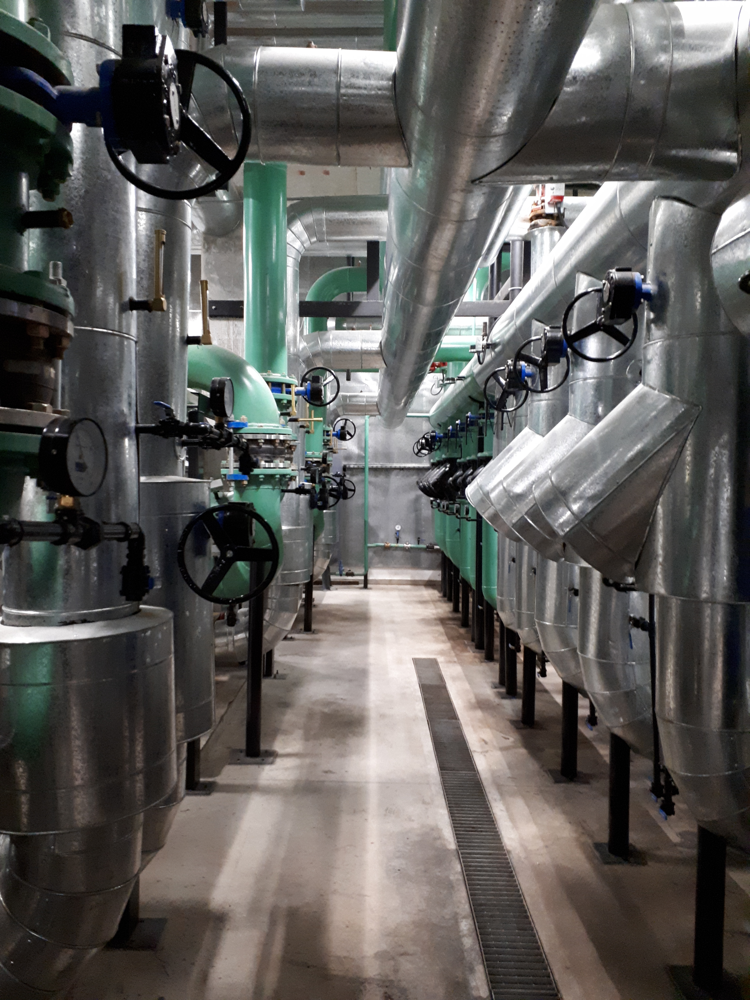
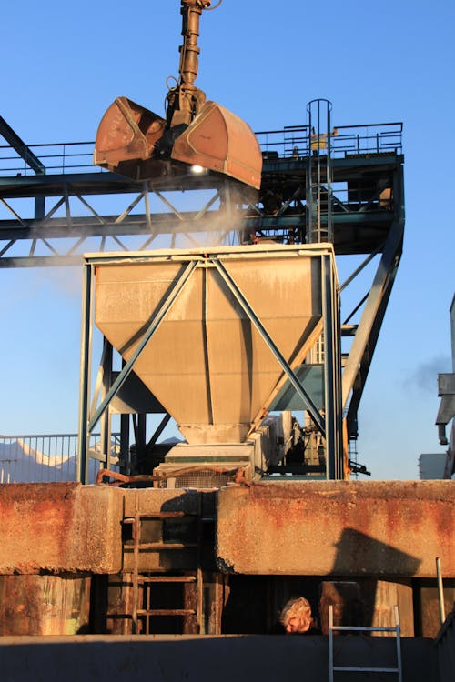
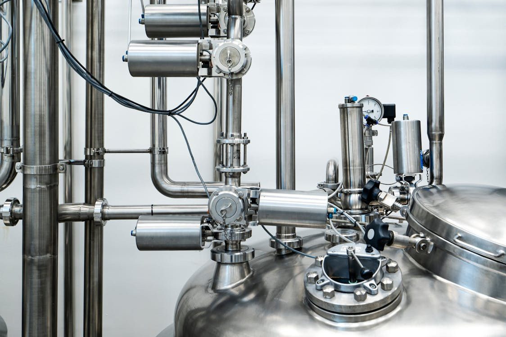
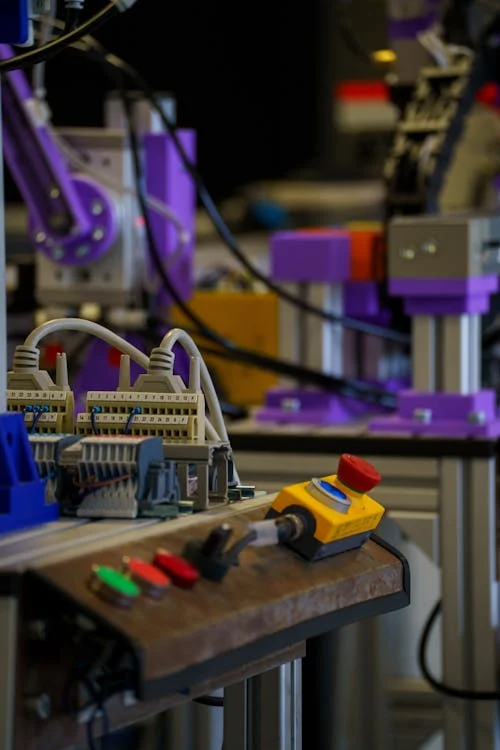
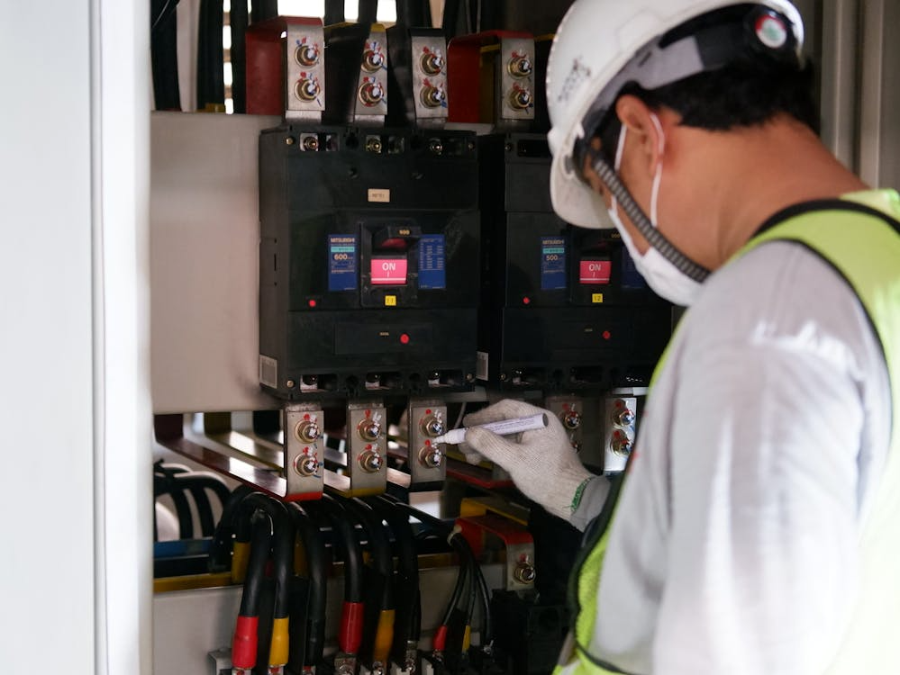
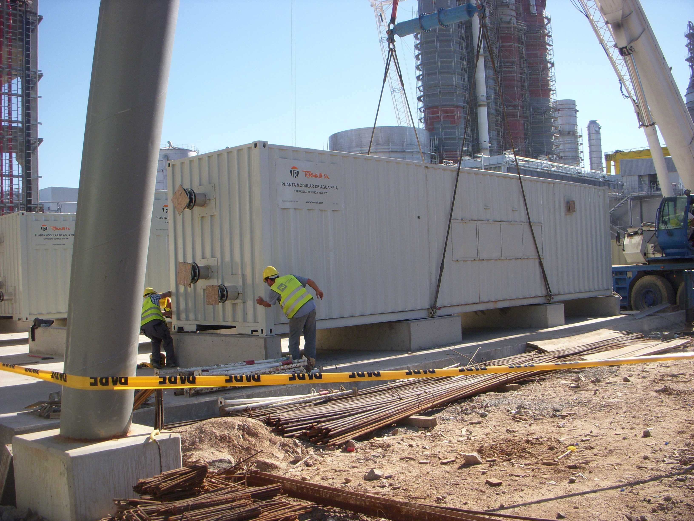

Más de seis décadas desarrollando ingeniería para proyectos complejos
Fundada en 1958 por profesionales de la ingeniería, TERMAIR nació con el objetivo de proyectar y ejecutar sistemas centrales de aire acondicionado y ventilación.
Con el tiempo, la empresa amplió su alcance y evolucionó hacia el desarrollo de proyectos de mayor complejidad técnica, incorporando nuevas capacidades y especialización en distintas áreas de la ingeniería aplicada.
Evolución hacia proyectos de alta exigencia
Desde la década del 80, TERMAIR participa en obras que requieren un alto nivel de ingeniería, control de calidad y capacidad operativa
Proyectos vinculados al área nuclear, obras hidroeléctricas, saneamiento, obras eléctricas. Esta evolución consolidó un perfil orientado a resolver desafíos técnicos en entornos exigentes y de gran escala.
Experiencia que se traduce en capacidad real de ejecución
A lo largo de su trayectoria, la empresa ha intervenido en obras de gran relevancia, tanto por su envergadura como por su complejidad técnica y nivel de innovación.
Hoy, TERMAIR cuenta con la facultad de desarrollar obras y servicios de ingeniería avanzada, tanto en Argentina como en el exterior.
Capacidad operativa y gestión integral
TERMAIR dispone de una sólida estructura operativa que le permite abordar proyectos de diversa índole, adaptándose a los requerimientos técnicos de cada obra. Su equipo está conformado por ingenieros, técnicos y operarios especializados que trabajan con herramientas y metodologías actuales para el diseño, cálculo y ejecución de:

Montajes de equipos

Instalaciones de cañerías

Sistemas de control

Soluciones eléctricas
Un equipo técnico preparado para cada desafío
El nivel de capacitación del equipo profesional es un factor clave en la calidad de cada proyecto
TERMAIR cuenta con un staff técnico preparado para responder a las exigencias de la industria actual, aplicando conocimiento, experiencia y criterio en cada etapa del proceso.
